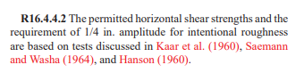
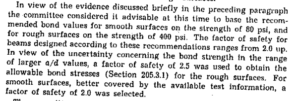
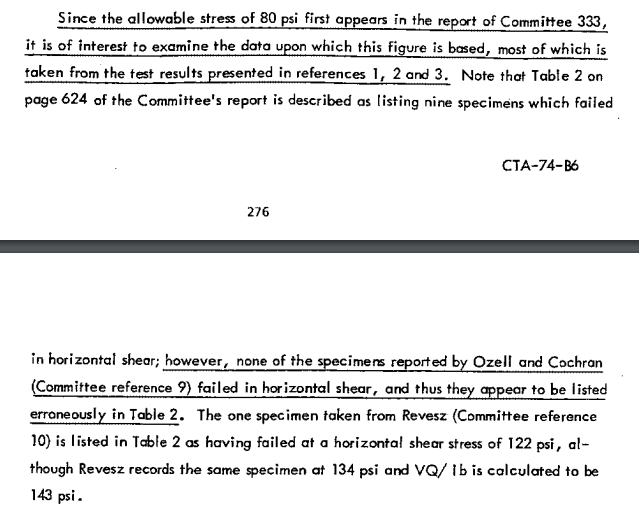
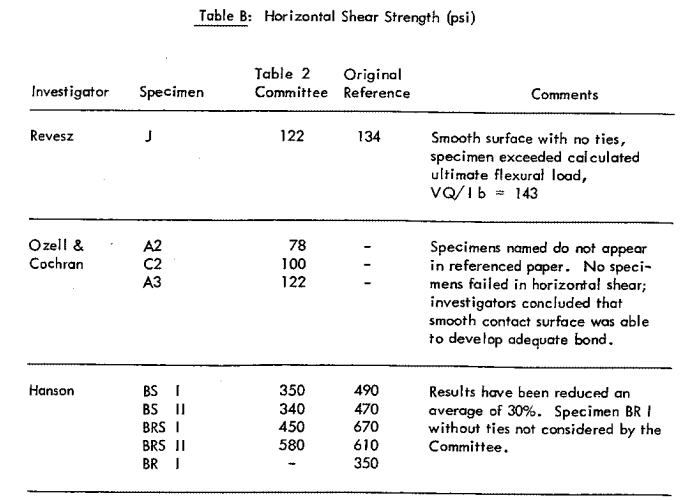
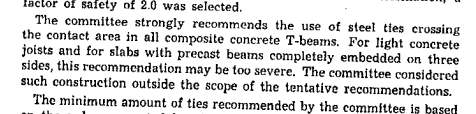
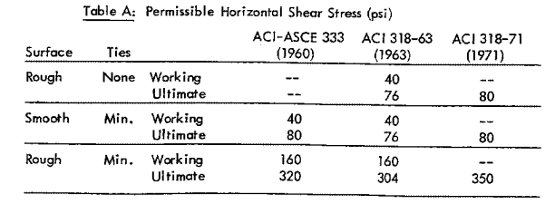
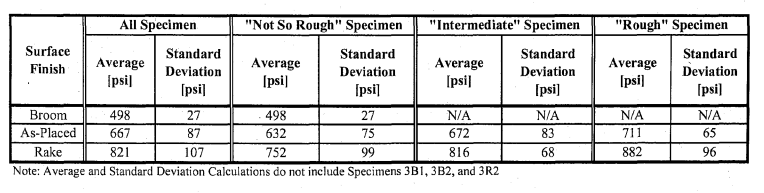
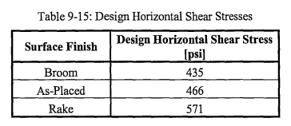

It’s often infeasible to pour a concrete structural element all at one time. Because of this, pours are often split up - the contractor may pour foundation grade beams, and then back and pour the slab on top. Or they may set a precast concrete floor, and then pour a concrete topping over them. Differently timed concrete pours will leave horizontal joints in through the concrete, creating a composite member.
Because horizontal shear will be transferred across this joint, it’s necessary to know it’s capacity to resist load. These provisions for calculating its capacity are given in ACI 318-19 Table 16.4.4.2:
The code gives a severe penalty to concrete without shear reinforcing crossing the joint, and to concrete not roughened to a +-1/4" amplitude (with a roughened surface being required for an unreinforced joint). The maximum capacity of an unreinforced concrete joint is 80 psi.
Roughening a concrete surface to 1/4" amplitude and installing shear reinforcing are both labor-intensive, time consuming and costly. So it’s useful to examine the source of this provision, particularly the 80 psi value for an unreinforced joint.
According the the commentary, these load capacities are based on research done in the early 60’s:

However, looking at these sources makes it unclear where the 80 psi comes from.
Kaar (1960) ran no tests for horizontal shear through unreinforced joints.
Hanson (1960) states:
- The girder and push-off tests reported herein indicate a maximum shearing stress for composite action of 500 psi for a rough bonded surface and 300 psi for a smooth bonded surface. The compressive strengths of the concretes were 3000 and 5000 psi for the slab and girder, respectively.
And Saemann and Washa (1964) give an equation based on % steel, shear span, and effective depth, with unreinforced joint capacity ranging from 450psi to 200psi:

So where does the 80psi value come from?
If we dig back, we find that the 80 psi value first appears in ACI-ASCE Committee 333 “Tentative Recommendations for Design of Composite Beams and Girders for Buildings”.

These recommendations are based on horizontal shear capacities of 78 beams tested, nine of which failed in horizontal shear. Of these, only 3 of these members had unreinforced joints, all of which were smooth:

Furthermore, the data in Table 2 appears to have been copied incorrectly. We can find it discussed in a CTA Technical Bulletin from 1974:


Based on this data, the committee recommended a shear capacity value of 80 psi for smooth surfaces with reinforcement, and 400 psi for rough surfaces with reinforcement. They describe these values as incorporating a 2 to 2.5 safety factor, though it is unclear what that is based on - for instance, the largest horizontal shear capacity with a roughened joint is only 580 psi, a less than 1.5 safety factor over 400.
The committee deliberately abstined from making a recommendation for unreinforced joints:

Despite this, the 80 psi value was incorporated into ACI 318-71 as the recommended value for both smooth reinforced joints, and rough unreinforced joints.

That value has remained unchanged in the code ever since.
So if the value of 80 psi is based on nothing, what is the actual capacity of an unreinforced horizontal concrete joint?
Much of the research in this area is summarized in Kovach (2008):


The samples vary in concrete strength, surface finish, testing conditions, and preparation prior to pouring (with some being deliberately fabricated in such a way to prevent a bond from forming), making it difficult to draw direct conclusions beyond the obvious conservatism of the 80 psi limit.
Running his own series of tests, Kovach achieves the following results:


The horizontal shear strengths of an unreinforced joint as calculated by Kovach (and consistent with previous research) range from 435 psi to 571 psi, 6-10 times that of the value currently required by ACI.
Another comprehensive study of shear capacity was performed by Loov and Pataik (1994). Running their own series of tests, and summarizing the data of 5 previous studies, they approximate the horizontal shear capacity of a concrete joint as:

Where k is 0.5 for joints, and 0.6 for monolithic pours. This equation provides a reasonable lower bound of capacity:

For 4000 psi concrete and the recommended k value of 0.5 an unreinforced joint would have a 122 psi capacity (a value which conservatively does not take surface roughness into account, as capacity varies substantially with roughness).
Regardless of the formula used, given the provenance of existing, and the results of more recent research, ACI should consider re-examining these provisions.